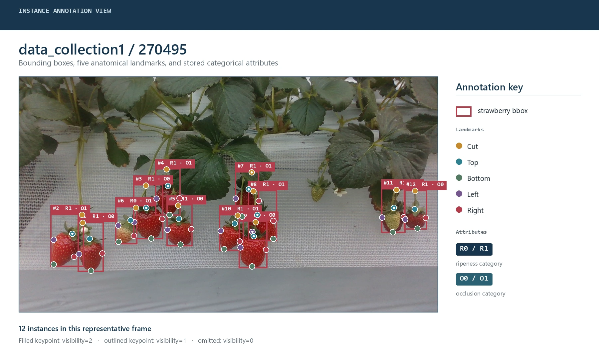
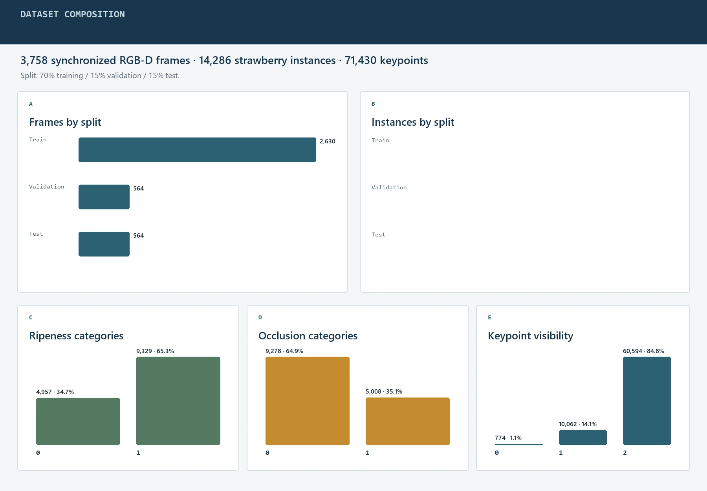
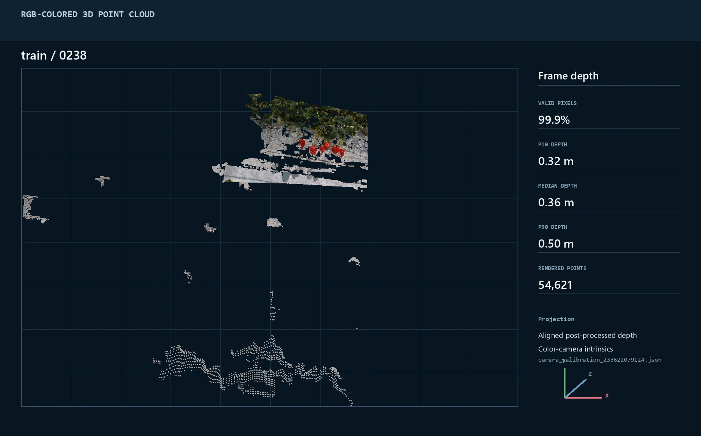

Synchronized RGB-D samples
Train/validation release · July 2026
A synchronized RGB-D strawberry dataset for real greenhouse perception
The current release contains 3,758 paired frames and 14,286 annotated strawberry instances. Every instance combines a bounding box, five anatomical keypoints, a ripeness category, and an occlusion category.

01
Release audit
Dataset snapshot
Statistics were recomputed from the reorganized train/validation release. Counts cover every synchronized modality and the per-image camera calibration mapping.
Strawberry bounding boxes
Five keypoints per instance
18,795 files in total
Cross-modal pairing
3,758 complete RGB, label, aligned-depth, post-processed-depth, and raw-depth sets.
Annotation structure
All 14,286 instances contain one each of Cut, Top, Bottom, Left, and Right.
Calibration mapping
All 3,758 image records map to one of four RealSense camera calibration files.
Reproducible release summary
Open statistics JSON
The complete machine-readable count table and observed category values are included with the site.
02
Dataset analysis
Composition and label balance
The release now uses a fixed train/validation split. Training contains 3,006 frames and validation contains 752 frames, preserving the full set of synchronized RGB-D records.

| Split | Frames | Share | Instances | Inst./frame |
|---|---|---|---|---|
| Train | 3,006 | 80.0% | 11,502 | 3.83 |
| Validation | 752 | 20.0% | 2,784 | 3.70 |
| Total | 3,758 | 100% | 14,286 | 3.80 |
03
Data specification
Modalities and annotation protocol
Every four-digit sample ID identifies one synchronized record inside either train or validation. Post-processed aligned depth is used for the 3D visualization below, with calibration selected from the release-wide image-to-camera mapping.
| Signal | Representation | Release count | Intended use |
|---|---|---|---|
| RGB | 1280 × 720 PNG | 3,758 | Appearance, localization, and attribute recognition |
| Aligned depth | 16-bit depth PNG aligned to color | 3,758 | RGB-D fusion and metric geometry |
| Processed depth | Spatial, temporal, and hole-filled aligned depth | 3,758 | Stable visualization and downstream geometry |
| Raw depth | Original 16-bit depth PNG | 3,758 | Reprocessing and sensor-level studies |
| Instance label | LabelMe JSON | 3,758 | Boxes, five keypoints, ripeness, and occlusion |
| Calibration map | Per-image XLSX mapping plus four camera JSON files | 3,758 | Select the correct camera intrinsics for metric reconstruction |
Instance record
{ bbox, Cut, Top, Bottom, Left, Right, ripeness, occlusion }
Visibility is stored per keypoint as 0, 1, or 2. Ripeness and occlusion use observed values 0 and 1.
04
Qualitative inspection
Annotation and depth visualization
Both views below use the same representative sample. The first shows the complete instance-level label overlay; the second reconstructs aligned post-processed depth into a colorized 3D point cloud.
Loading real point-cloud data…

Drag to rotate
Shift/right-drag to pan
Wheel or pinch to zoom
Arrow keys · +/− · R
05
Availability
Resources
Dataset available
Strawberry RGB-D dataset package
The current release is distributed through Baidu Netdisk with train/validation partitions, synchronized depth variants, and per-image camera calibration mapping.
Open dataset download
Access code:
pgna
- Dataset
- Available
- Statistics
- Release summary JSON
- Associated paper
- To be added
- Source code
- To be added
- Dataset license
- To be specified
- Citation
- To be added with publication details